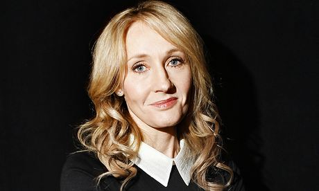

Hello period 4. Hurray for Friday! I really can't wait for the weekend. I like the weekend. Etc etc.
Harry Potter is a series of seven fantasy novels written by British author J. K. Rowling. The series chronicles the adventures of a young wizard, Harry Potter, the titular character, and his friends Ronald Wesley and Hermione Granger, all of whom are students at Hogwarts School of Witchcraft and Wizardry. The main arc concerns Harry's quest to overcome the Dark wizard Lord Voldemort, who aims to become immortal, conquer the wizarding world, subjugate non-magical people, and destroy all those who stand in his way, especially Harry Potter. Since the release of the first novel, Harry Potter and the Philosopher's Stone, on 30 June 1997, the books have gained immense popularity, critical acclaim and commercial success worldwide.[2] The series has also had some share of criticism, including concern about the increasingly dark tone as the series progressed. As of July 2013, the books had sold between 400 million and 450 million copies, making them one of the best-selling book series in history, and had been translated into 73 languages.[3][4] The last four books consecutively set records as the fastest-selling books in history, with the final instalment selling roughly 11 million copies in the United States within the first 24 hours of its release. A series of many genres, including fantasy, coming of age and the British school story (with elements of mystery, thriller, adventure and romance), it has many cultural meanings and references.[5] According to Rowling, the main theme is death.[6] There are also many other themes in the series, such as prejudice and corruption.[7] The series was originally printed in English by two major publishers, Bloomsbury in the United Kingdom and Scholastic Press in the United States. The books have since been published by many publishers worldwide. The books, with the seventh book split into two parts, have been made into an eight-part film series by Warner Bros. Pictures, the highest-grossing film series as of October 2014. The series also originated much tie-in merchandise, making the Harry Potter brand worth in excess of $15 billion.[8] Because of the success of the books and films, Harry Potter-themed areas, known as The Wizarding World of Harry Potter, have been created at several Universal Parks & Resorts theme parks.
15 MAIN ChARACTERS:
Daniel Radcliffe
upert Grint
Emma Watson
Richard Harris
Michael Gambon
Robbie Coltrane
Bonnie Wright
James Phelps
Oliver Phelps
Julie Walters
Mark Williams
Chris Rankin
Domhnall Gleeson
Geraldine Somerville
Adrian Rawlins
Jo then moved to northern Portugal, where she taught English as a foreign language. She married in October 1992 and gave birth to a daughter in 1993. When the marriage ended, she and Jessica returned to the UK to live in Edinburgh, where Harry Potter & the Sorcerer’s Stone was eventually completed. The book was first published by Bloomsbury Children’s Books in June 1997, under the name J.K. Rowling. The “K”, for Kathleen, her paternal grandmother’s name was added at her publisher’s request who thought that a woman’s name would not appeal to the target audience of young boys.
The second title in the series, Harry Potter and the Chamber of Secrets, was published in July 1998 and was No. 1 in the adult hardback bestseller charts for a month after publication. Harry Potter and the Prisoner of Azkaban was published on 8th July 1999 to worldwide acclaim and spent four weeks at No.1 in the UK adult hardback bestseller charts.
The fourth book in the series, Harry Potter and the Goblet of Fire was published on 8th July 2000 with a record first print run of 1 million copies for the UK. It quickly broke all records for the greatest number of books sold on the first day of publication in the UK.
Harry Potter and the Order of the Phoenix was published in Britain, the USA, Canada and Australia on 21st June 2003 and broke the records set by Harry Potter & the Goblet of Fire as the fastest selling book in history. Harry Potter and the Half-Blood Prince was published in the UK, US and other English-speaking countries on 16th July 2005 and also achieved record sales.
The seventh and final book in the series, Harry Potter and the Deathly Hallows, was published in the UK, US and other English speaking countries in 2007.